Control Systems · Part 2
UR5e Independent Simulation, ROS2 Integration & Runtime Validation
Part 2 transfers the controller designs established in Part 1B outside the analytical plant and into increasingly independent execution layers. PID, computed torque, LQR, and MPC are first cross-validated through direct effort control in NVIDIA Isaac Sim; PID, LQR, and MPC are then deployed through a ROS2/C++ runtime architecture to expose timing, synchronization, actuation-phase, solver, and middleware effects that are invisible in the analytical model.
Recorded Isaac Sim performance for PID, LQR, and MPC, including the MPC runtime-failure and stabilized practical-configuration sequence.
1. Validation Strategy
Part 1B established the analytical controller baselines. Part 2 deliberately changes one validation layer at a time so that model, simulator, and runtime effects can be separated rather than mixed into one benchmark number.
| Benchmark Item | Definition |
|---|---|
| Reference | 4 s quintic joint-space trajectory |
| Start pose | [0, -90, 90, -90, -90, 0]° |
| Goal pose | [20, -60, 60, -70, -70, 20]° |
| Controller period | 2 ms (500 Hz) |
| Nominal logged updates | 2000 |
| Adopted torque limits | [150, 150, 150, 28, 28, 28] Nm |
2. Part 2A — Direct Isaac Validation
The first layer removes the analytical plant from state propagation without introducing ROS2. The same controller definitions drive an independently implemented UR5e articulation through direct joint effort commands. This provides a clean controller/physics baseline before middleware, callbacks, logging, and runtime scheduling are added.
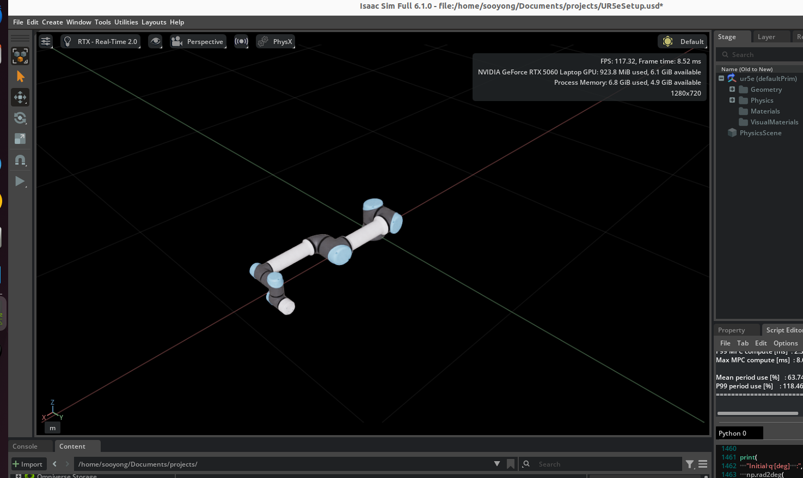
Physics-Step Synchronization
An early PID transfer advanced the reference every 2 ms while the physics scene was running near 60 Hz. Overall joint RMSE increased to approximately 3.75° and the adopted limits on the first three joints were reached. This was treated as an invalid reproduction of the analytical benchmark—not as evidence that the controller mathematics had failed. Correcting the physics timestep to 2 ms restored the expected regime.
Actuation Phase
Computed torque exposed a second synchronization error. Applying unchanged effort commands after the physics step produced approximately 0.700694° RMSE. Moving the same command to PRE_PHYSICS_STEP reduced RMSE to approximately 0.00082685°—about 847× lower—without changing the controller equations, gains, trajectory, or limits.
| Controller | Part 1B RMSE | Direct Isaac RMSE |
|---|---|---|
| PID | 0.469844° | 0.464275° |
| Computed Torque | 0.001244° | 0.000827° |
| LQR | 0.015502° | 0.014925° |
| MPC | 0.048474° | 0.048790° |
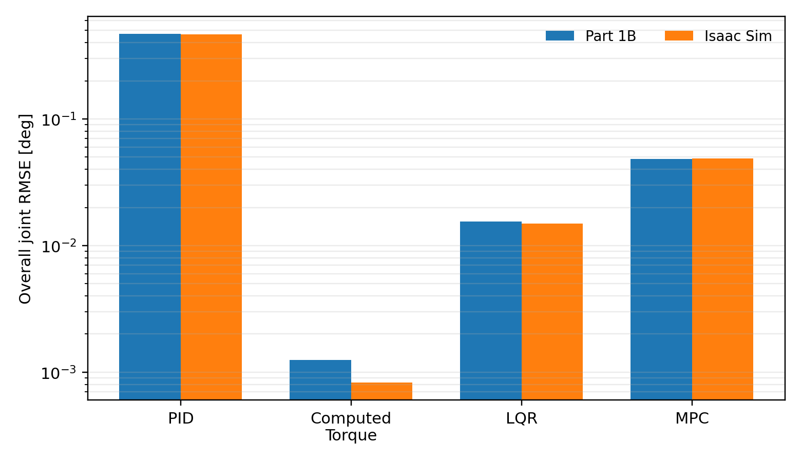
3. Part 2B — ROS2 Runtime Architecture
The ROS2 stage preserves the tested controller cores but changes the execution architecture. Controller execution, initialization, experiment lifecycle, and logging are separated so that failures can be localized rather than hidden inside one monolithic script.
controller_node
Subscribes to joint state, executes PID/LQR/MPC, publishes effort commands, and emits validation telemetry.
validation_manager
Controls WAITING → INITIALIZING → RUNNING → COMPLETE/FREE_FALL → SHUTDOWN sequencing.
logger_node
Records simulation time, measured/reference states, commanded torque, and controller computation time.
isaac_initializer.py
Holds the benchmark initial joint configuration before each run and releases the system when validation begins.
MPC is indexed using Isaac simulation time rather than assuming every wall-clock callback arrives exactly every 2 ms. Duplicate/old indices are skipped, and missed discrete indices are not replayed. A sparse retained sequence is therefore a runtime diagnostic: the controller did not service every nominal 2 ms opportunity.
4. PID and LQR Runtime Validation
PID
2000 / 2000 updates completed. Overall joint RMSE ≈ 1.006°. Mean / P99 computation ≈ 0.00164 / 0.00416 ms.
LQR
2000 / 2000 updates completed. Overall joint RMSE ≈ 2.344°. Mean / P99 computation ≈ 0.00728 / 0.01510 ms.
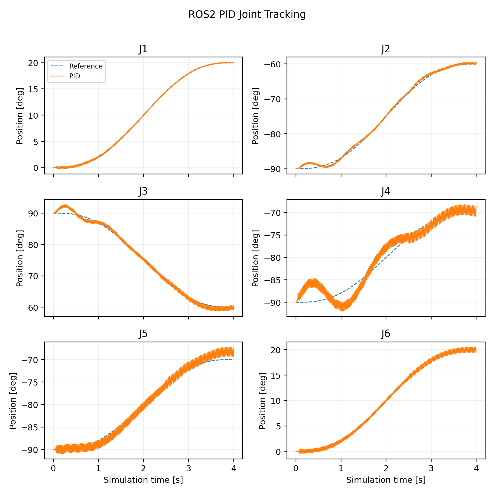
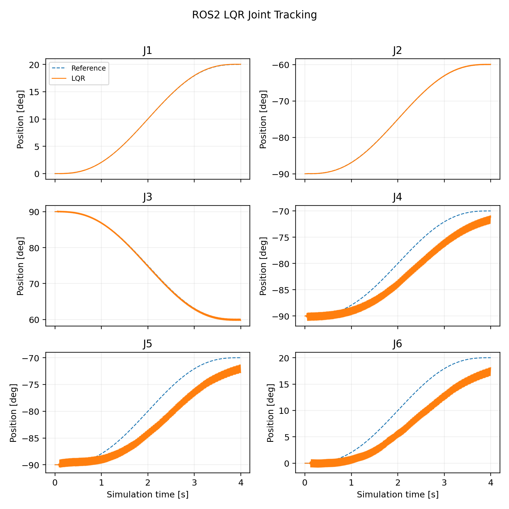
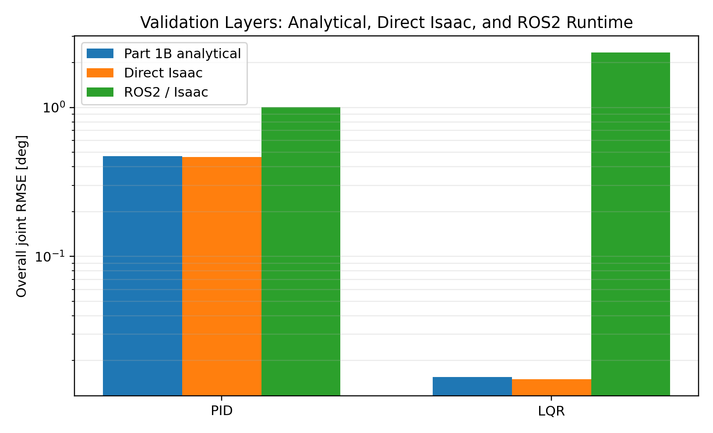
5. MPC Runtime Failure Mechanism
The model-selected MPC from Part 1B uses Np = 160 (320 ms prediction), Nc = 40 (80 ms independently optimized control window), and ρu = 10. It worked in the analytical benchmark and direct Isaac validation. In ROS2, however, the initial low-millisecond solve regime did not persist.
aggressive corrective torque → position/velocity error accumulation → torque constraints become active → QP workload/tail latency increases → 2 ms control opportunities are missed → state mismatch grows further.
The important point is that the solver did not simply begin “too slow.” The runtime collapse emerged through the coupled controller–plant–solver interaction. The failing ρu = 10, Nc = 40 run retained only 159 / 2000 updates (7.95%). Its large RMSE and latency numbers characterize the failure regime; they are not interpreted as the intrinsic performance or computational cost of MPC.
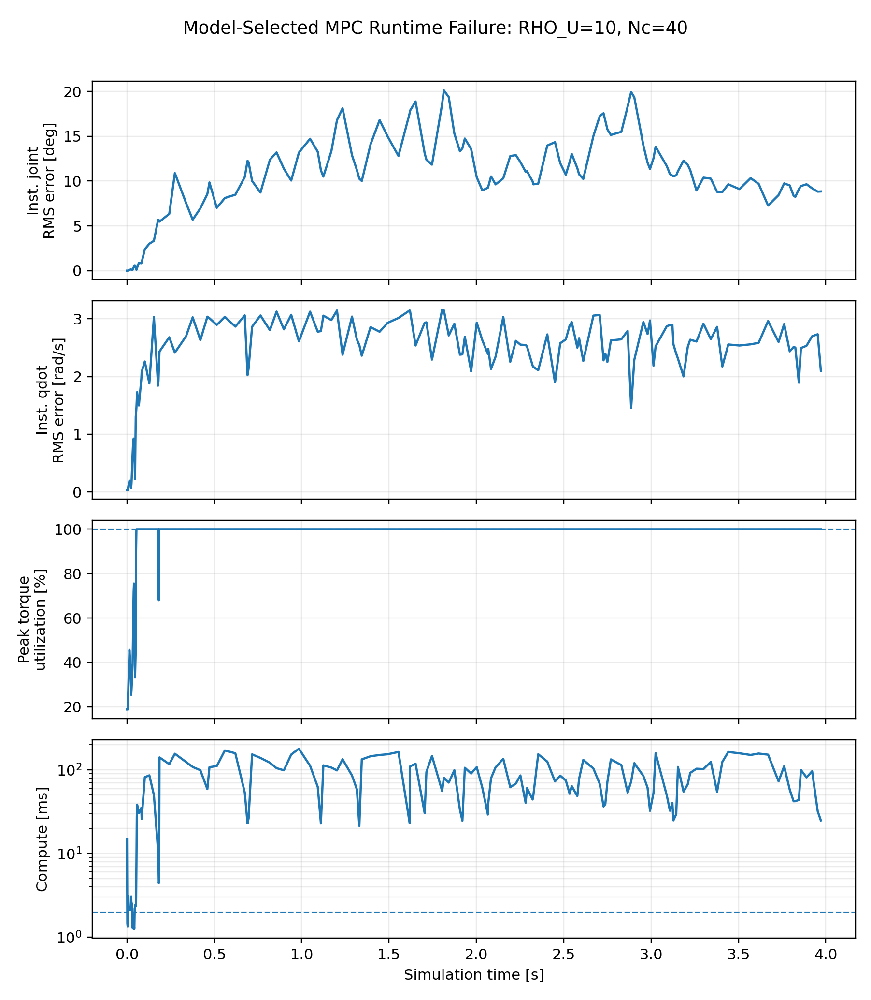
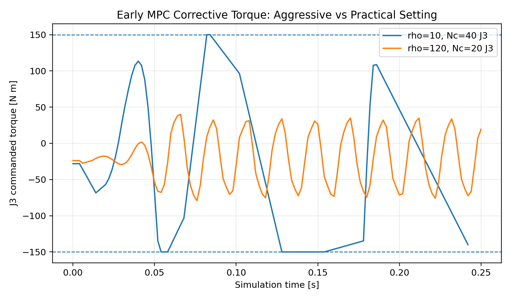
6. MPC Runtime Sensitivity Study
The prediction horizon was kept fixed at Np = 160 = 320 ms. The study varied only the input penalty and control horizon. Increasing ρu makes corrective effort more expensive; reducing Nc shortens the independently optimized control window while leaving the prediction window unchanged.
| ρu / Nc | Samples | Completion | RMSE | Mean | P99 | Max |
|---|---|---|---|---|---|---|
| 10 / 40 | 159 | 7.95% | 10.694°* | 69.755 ms | 166.800 ms | 179.316 ms |
| 10 / 20 | 186 | 9.30% | 14.181°* | 62.155 ms | 160.036 ms | 163.850 ms |
| 120 / 40 | 1730 | 86.50% | 3.389°* | 3.206 ms | 36.941 ms | 70.423 ms |
| 120 / 20 | 2000 | 100% | 2.486° | 0.751 ms | 1.636 ms | 2.901 ms |
* RMSE for incomplete runs describes the retained failure trajectory and is not used as a valid MPC performance benchmark.
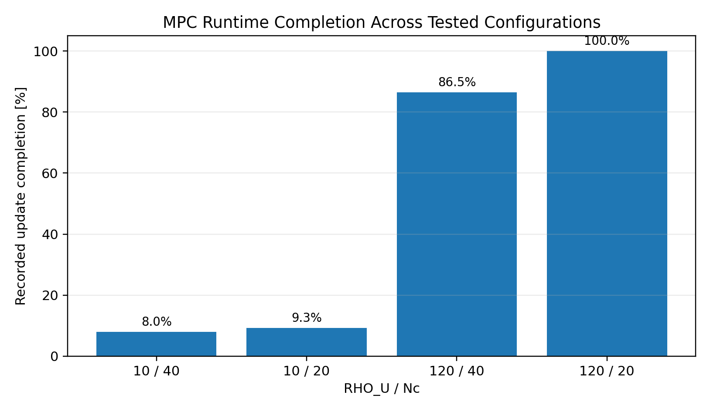
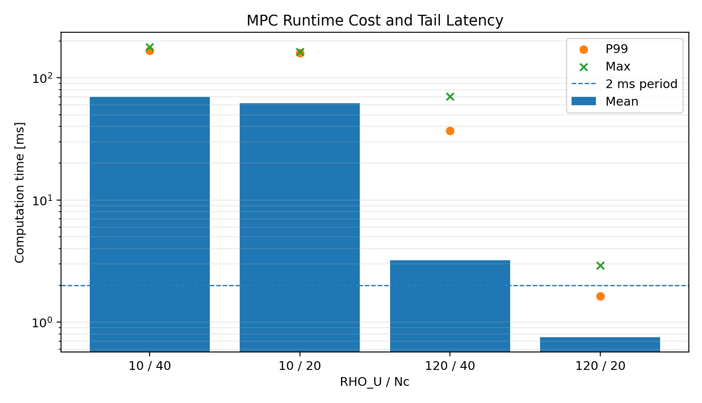
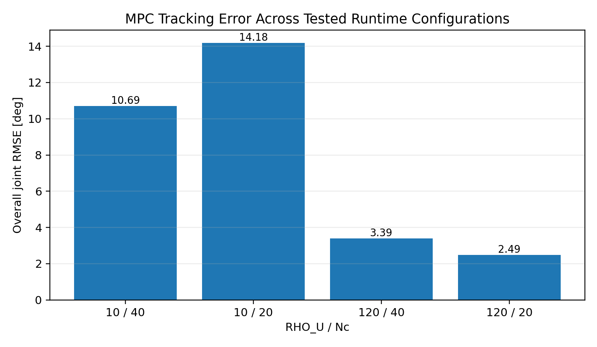
Practical Runtime Configuration
This configuration completed the full trajectory and is reported only as a practical runtime configuration identified within the tested cases. It is not claimed as a globally optimized MPC design. A complete re-optimization would require repeating the Part 1B analytical sweeps, nonlinear benchmarks, robustness studies, and implementation cross-validation under a new task objective.
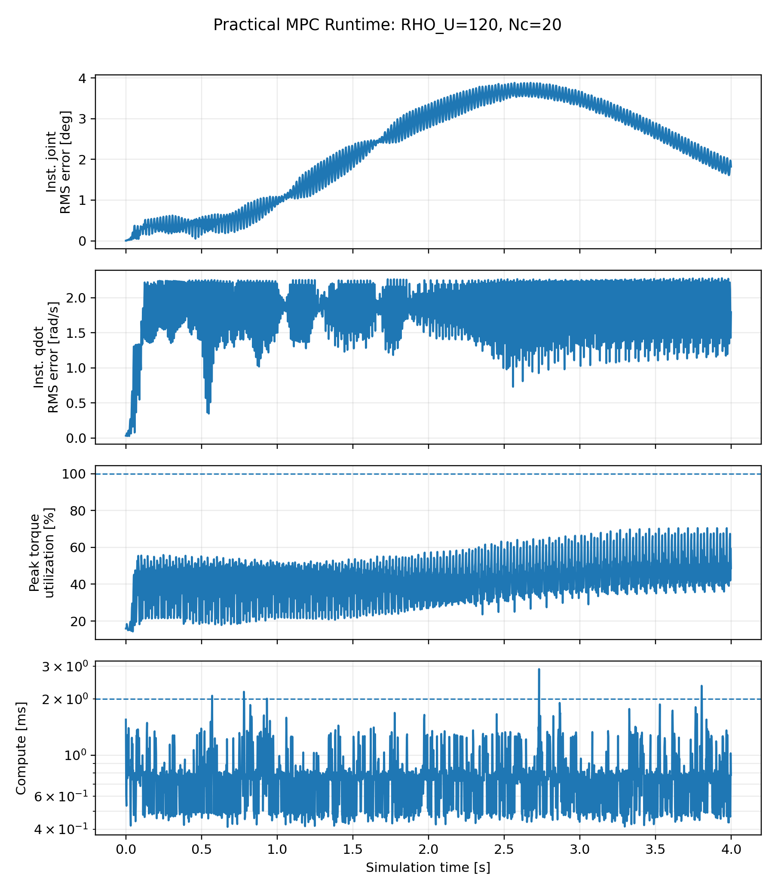
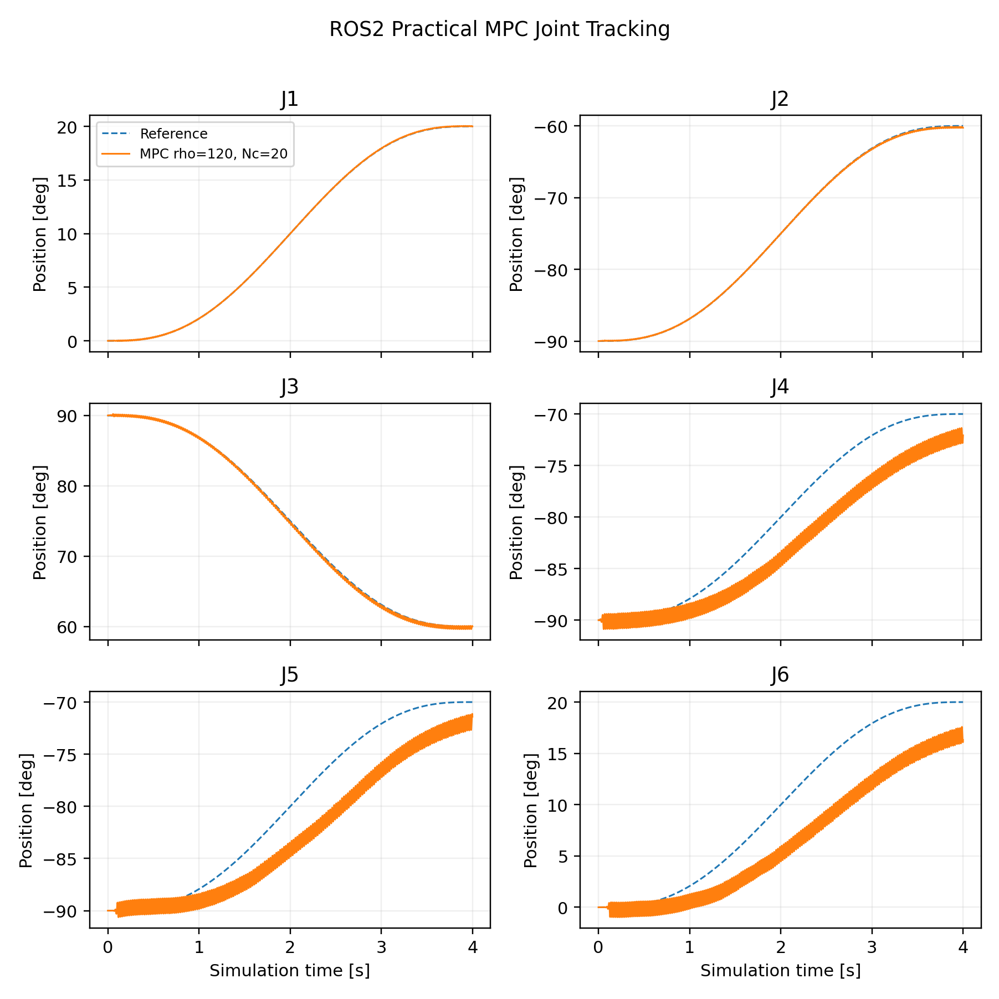
7. ROS2 Runtime Outcome Summary
The table below documents the three controllers that completed the final ROS2 experiment set. It is intentionally descriptive. Part 2 did not retune each controller to a common ROS2 optimum, so the numerical ordering of the RMSE values is not interpreted as a controller ranking.
| Controller | Samples | RMSE | Max Error | Mean Compute | P99 |
|---|---|---|---|---|---|
| PID | 2000 | 1.006° | 5.164° | 0.00164 ms | 0.00416 ms |
| LQR | 2000 | 2.344° | 6.223° | 0.00728 ms | 0.01510 ms |
| MPC practical | 2000 | 2.486° | 6.685° | 0.75066 ms | 1.63587 ms |
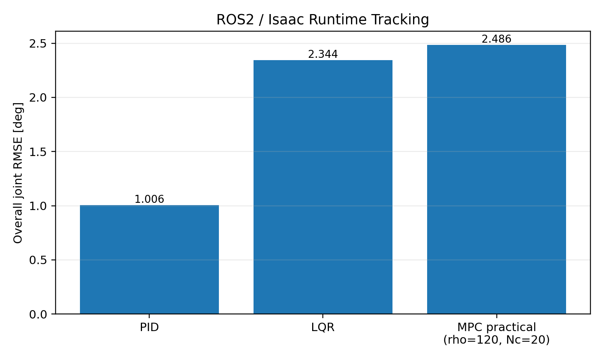
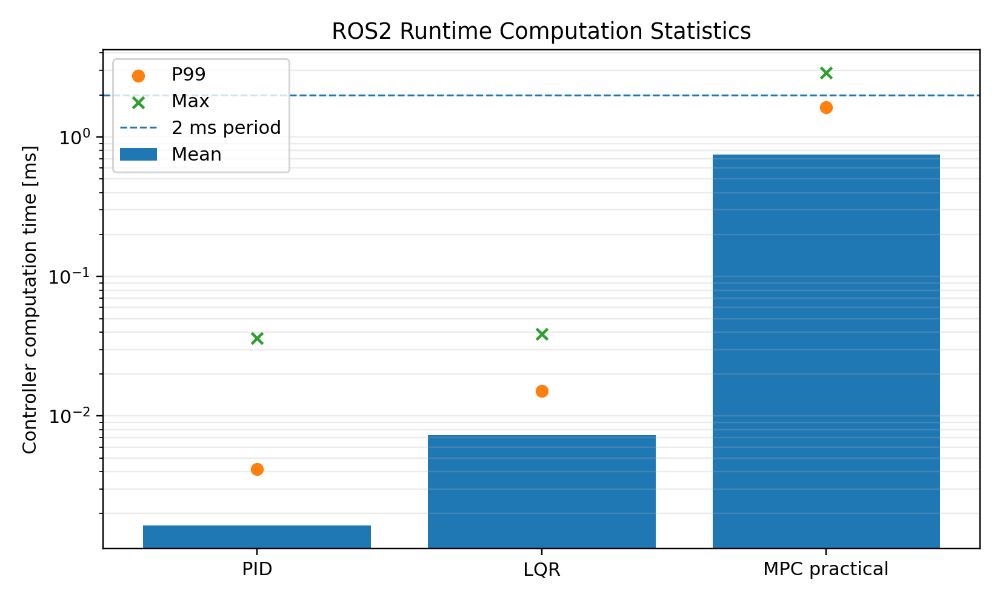
8. Engineering Conclusions
Timing Is Part of the Plant
A controller designed at 2 ms is not being tested under the same closed-loop system if simulator physics or command application uses a different temporal definition.
Runtime Failure ≠ Controller Ranking
Once an MPC run stops servicing the intended 2 ms control sequence, its retained RMSE is failure evidence—not a valid measure of optimized tracking capability.
Prediction and Control Horizons Are Different
The practical MPC retained a 320 ms prediction window while shortening the independently optimized control window from 80 ms to 40 ms.
Mean Runtime Is Not Enough
Tail latency, update completion, state error, and constraint activity must be examined together when assessing runtime feasibility.
9. Next Stage — Task-Oriented Optimization
The runtime-adjusted MPC was intentionally not promoted to a new Part 1B optimum. The next stage will introduce an explicit manipulation task, such as pick-and-place, so that controller and planning decisions can be evaluated under a meaningful shared objective involving tracking, execution time, path quality, torque and torque-rate constraints, robustness, and task success.
10. Final Technical Report
UR5e Part 2 — Final Report
Full report covering direct-Isaac cross-validation, ROS2 integration, runtime architecture, MPC failure mechanism, sensitivity study, limitations, and reproducibility boundaries.
Project by Sooyong Kim · Robotics Control Portfolio